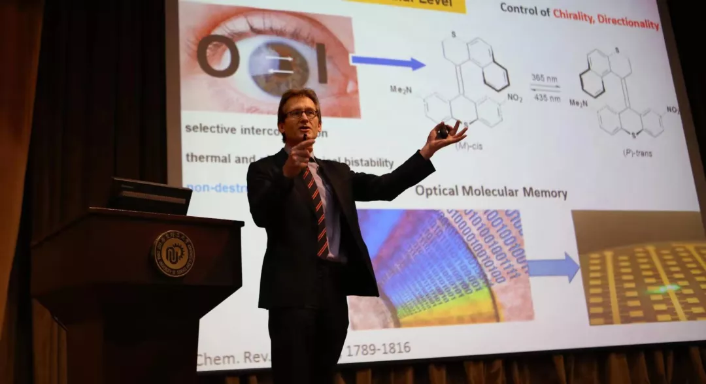

11月22日，中国工程院正式公布2019年增选院士结果，华东理工大学机械与动力工程学院涂善东教授当选中国工程院院士（化工、冶金与材料工程学部），标志学校高层次人才队伍建设再获突破。 同时，中国科学院正式公布2019年院士增选结果，华东理工大学特聘“国际知名大师客座教授”伯纳德·L·费林加教授当选中国科学院外籍院士（化学部），标志学校海外高层次人才队伍建设获得重大突破。
42019-12
【创新前沿】《德国应用化学》报道我校在催化不对称合成领域最新研究进展 近日，我校药学院上海市新药设计重点实验室邓
262019-11
创新前沿】我校金融物理研究团队一研究成果在Reports on Progress in Physics上发表 Multifractal analysis of financial markets: A review
242018-7
【不忘初心、牢记使命】曲景平校长为奉贤学生党员上党课 11月29日，曲景平校长在奉贤校区D教203室，
42019-12
【青春奋进】我校研究生在“华为杯”第十六届中国研究生数学建模大赛中喜获佳绩 第十六届“华为杯”数模竞赛颁奖会在福州大学举行
42019-12
生工、外语学院举办“星语心生”新生晚会 生物工程学院党委副书记左鹏、部分学院团委书记，两学院班导师代表观看了演出
42019-12
关于选派2020年秋季赴英国邓迪大学交流项目的通知 来稿单位:国际合作与交流处